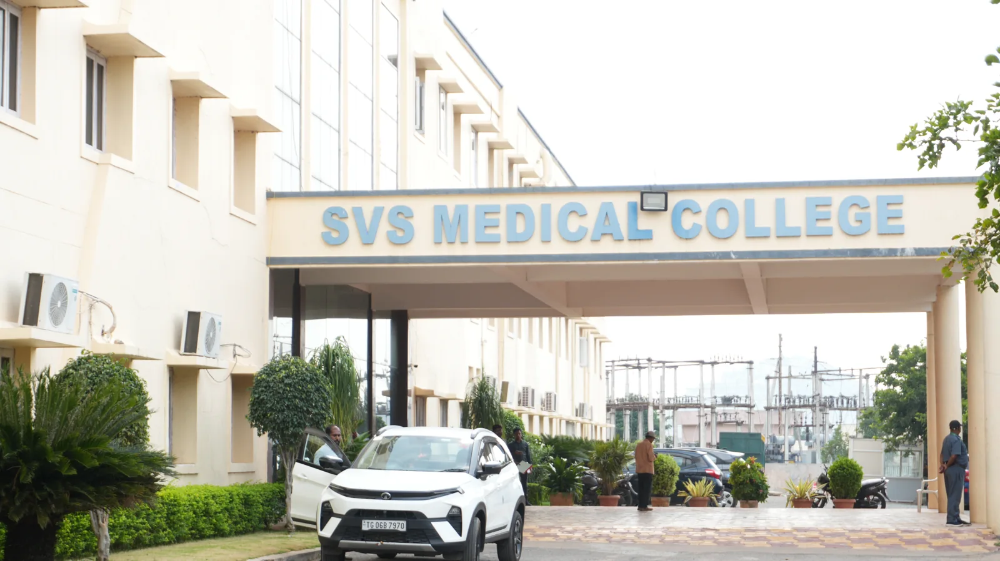

SVS Medical College was established in 1999 by Sri Venkata Sai Educational Society, bringing medical education and a teaching hospital to Mahabubnagar.
The MBBS degree was first affiliated to Dr. NTR University of Health Sciences, Vijayawada, and the college is now affiliated to Kaloji Narayana Rao University of Health Sciences (KNRUHS), Warangal. Postgraduate MD/MS courses began in 2005 and now span clinical, para-clinical and pre-clinical departments.
Today, teaching and treatment share one campus at Yenugonda. The teaching hospital has more than 1,000 beds across 39 clinical units, so students learn at the bedside from their early years. The group’s dental and nursing colleges sit alongside, each with its own campus, clinics and hostels.
Sri Venkata Sai Educational Society was founded in 1997, followed by the medical college in 1999 and MD/MS programmes in 2005.